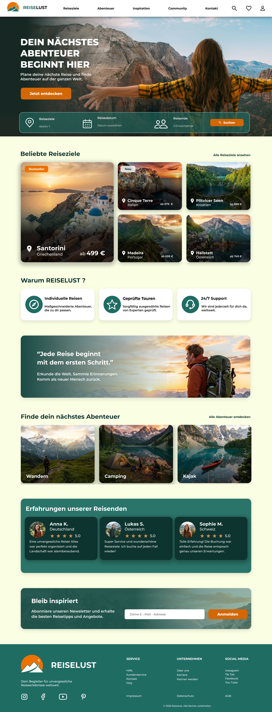
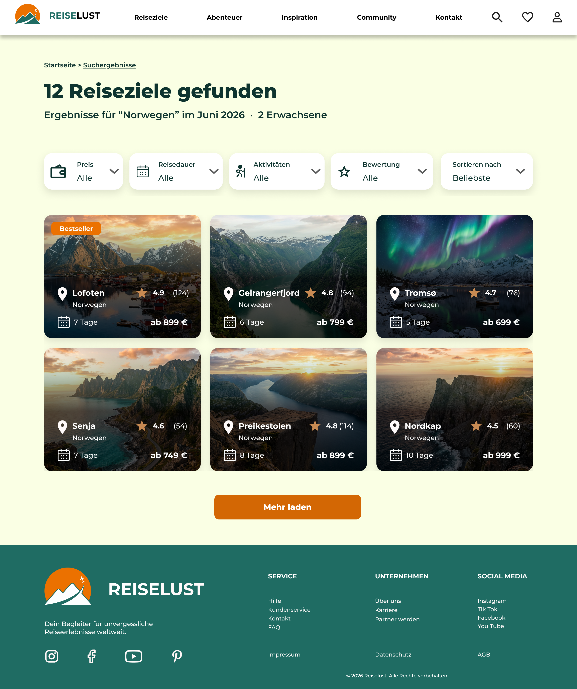
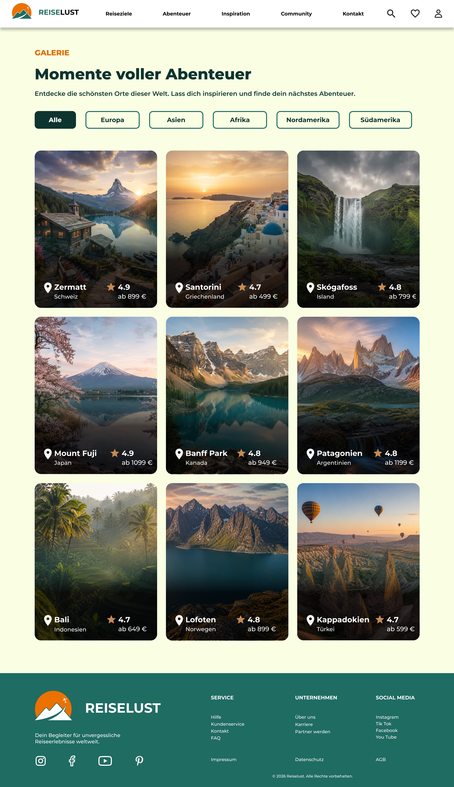
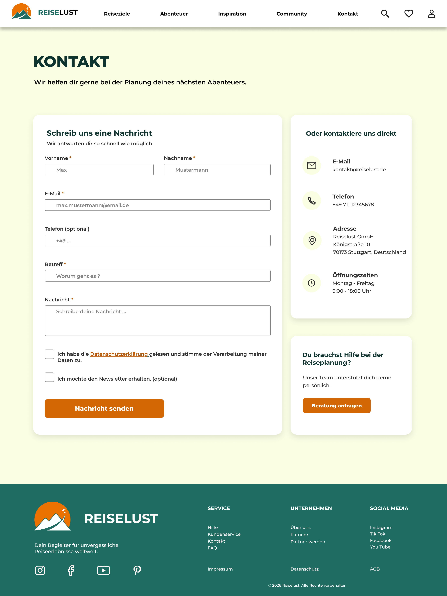
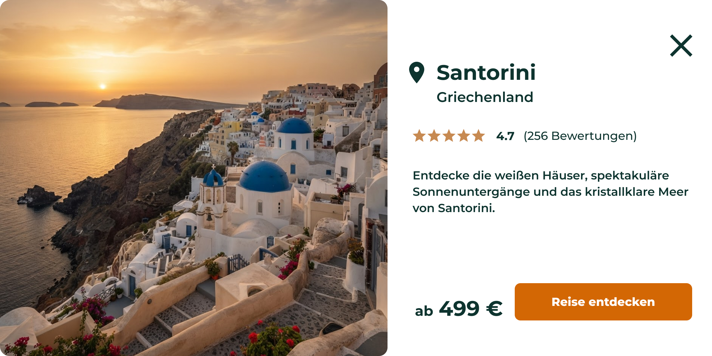
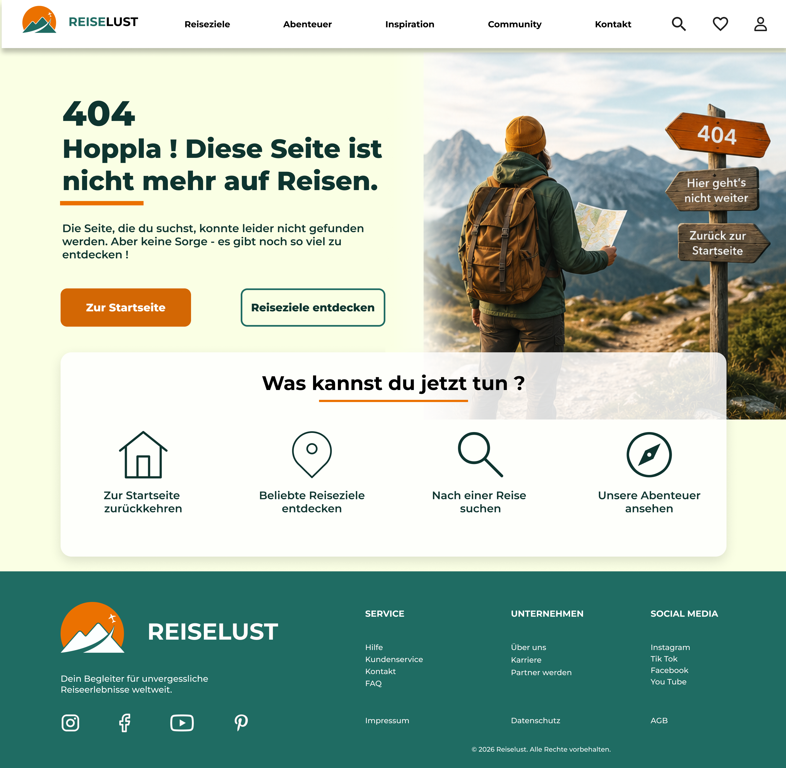

UI/UX DESIGN · FIGMA
REISELUST.
Ein modernes UI/UX-Designkonzept für eine Reisewebsite, das Inspiration, Übersichtlichkeit und intuitive Benutzerführung miteinander verbindet.

01 / PROJEKTÜBERSICHT
Über das Projekt.
REISELUST ist ein eigenständig entwickeltes UI/UX-Designkonzept für eine Reisewebsite. Ziel war es, eine übersichtliche und inspirierende digitale Plattform zu gestalten, auf der Nutzer Reiseziele entdecken und passende Angebote finden können.
Projekttyp
Eigenständiges Designkonzept
Meine Rolle
UI/UX Design
Tools
Figma
02 / UX-ANALYSE
Zielgruppe & Nutzungskontext.
Im Rahmen der Nutzungskontextanalyse wurden die Bedürfnisse, Ziele und Herausforderungen potenzieller Nutzer betrachtet.
Zielgruppe
Erwachsene zwischen 20 und 45 Jahren, die gerne reisen, neue Abenteuer suchen und ihre Reisen überwiegend online planen.
Bedürfnisse
Schnelle Reisesuche, transparente Preise, übersichtliche Informationen und vertrauenswürdige Bewertungen.
Herausforderungen
Begrenzte Zeit, unterschiedliche Budgets und eine große Auswahl an Angeboten erschweren die Reiseplanung.
03 / EMPATHY MAP
Die Nutzerperspektive.
Eine beispielhafte Persona hilft dabei, Bedürfnisse, Erwartungen und mögliche Herausforderungen bei der Reiseplanung besser zu verstehen.
PERSONA / MARKETING MANAGERIN
Sophie Müller
„Ich möchte schnell ein Abenteuer finden, das zu meinen Interessen und meinem Budget passt.“
Einfachheit & Orientierung
Schnelle Reiseplanung, klare Informationen und passende Reisevorschläge.
Zu viele Möglichkeiten
Eine unübersichtliche Angebotsauswahl, Zeitmangel und Unsicherheit bei der Entscheidung.
Inspiration & Vertrauen
Besondere Reiseerlebnisse entdecken und sich durch Bewertungen und Erfahrungsberichte orientieren.
04 / DESIGNENTSCHEIDUNGEN
Von der Analyse zum Design.
Aus der Nutzungskontextanalyse und der Empathy Map wurden zentrale Anforderungen für die Gestaltung von REISELUST abgeleitet.
Klare Navigation
Eine übersichtliche Seitenstruktur erleichtert die Orientierung und ermöglicht einen schnellen Zugang zu wichtigen Inhalten.
Gezielte Reisesuche
Such- und Filtermöglichkeiten helfen, passende Reiseziele schneller zu finden und die große Angebotsauswahl einzugrenzen.
Visuelle Inspiration
Großzügige Reisefotografien und eine emotionale Bildsprache wecken Interesse und unterstützen die Entdeckung neuer Reiseziele.
Vertrauen schaffen
Bewertungen und Erfahrungsberichte bieten zusätzliche Orientierung bei der Reiseentscheidung.
05 / UI-DESIGN
Farben & Typografie.
Die visuelle Gestaltung verbindet natürliche Farbtöne mit gezielten Akzenten. Montserrat sorgt für ein modernes und klares Schriftbild.
Farbpalette
Primary
#1F6C63Background
#FAFFE4Accent
#D36704Typografie
Montserrat
Aa Bb Cc Dd Ee Ff
Eine moderne, gut lesbare Schrift für Überschriften, Navigation und Fließtext.
06 / FINALE SCREENS
Das finale Design.
Die finalen Screens zeigen die visuelle Umsetzung des Designkonzepts in Figma.
Reisen entdecken.

Das passende Abenteuer finden.

Reiseziele entdecken.

Einfach Kontakt aufnehmen.

Reiseinformationen im Detail.

Auch Fehlerseiten gehören zum Design.

ENDE DES PROJEKTS
← Zurück zu den Projekten